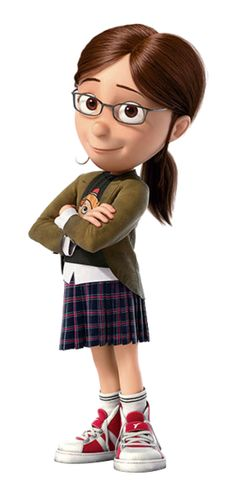
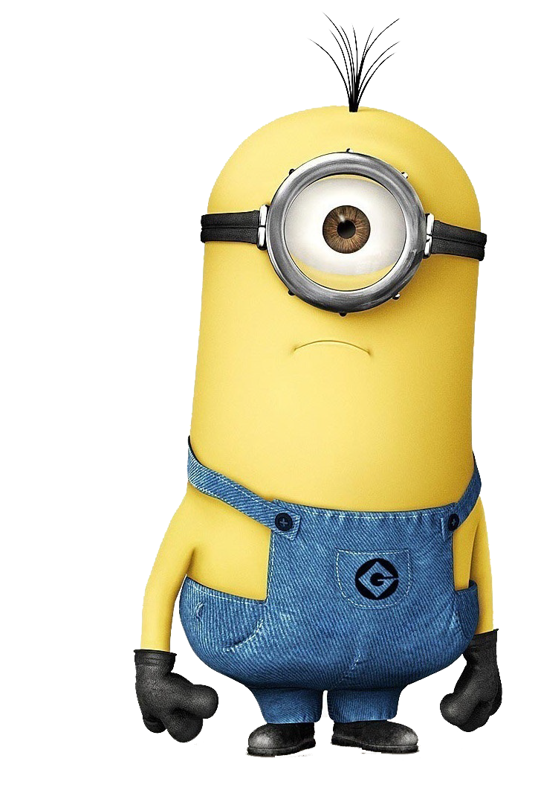
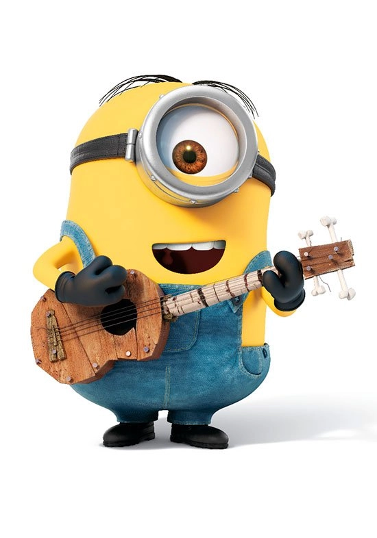
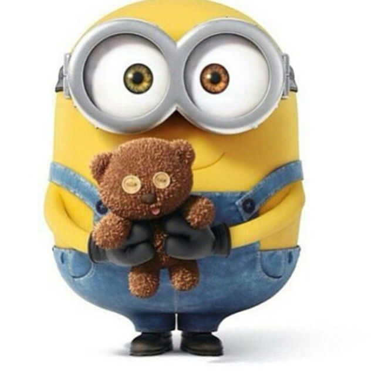
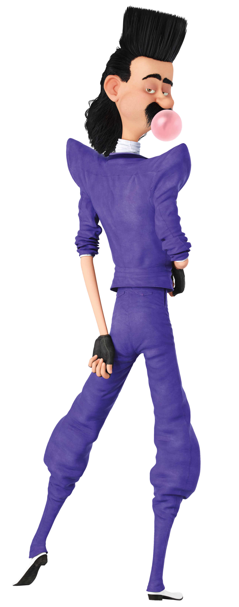
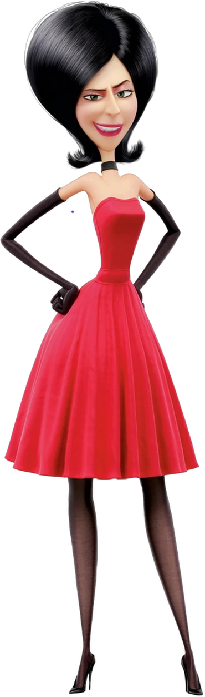

Soy yo, Peter Griffin, el tipo más carismático, apuesto y (según Lois) más insoportable de Quahog. Bienvenidos a mi humilde página web, donde podrán aprender sobre mi asombrosa vida, mis hazañas legendarias y, por supuesto, por qué debería ser declarado Tesoro Nacional.
Bueno, aparte de ser un icono de la moda (gracias a mi camiseta blanca y mis pantalones verdes), soy un orgulloso ciudadano de Quahog, Rhode Island. Trabajo en la cervecería Pawtucket (cuando no estoy despedido), pero mi verdadera pasión es… ¡HACER LO QUE ME DA LA GANA!
Ex-supervillano reconocido mundialmente por robar la Luna. Actualmente reconvertido en: Padre responsable Chef mediocre Conductor peligroso Protector oficial de Agnes Especialista en planes secretos y abrazos torpes
Meg es mi hija mayor. Tiene 17 años y, por alguna razón, siempre parece estar enojada con todos (especialmente conmigo). Se pasa la vida quejándose de que nadie la nota o la respeta, pero, sinceramente, no sé de qué habla.
Chris es mi hijo del medio y el heredero de mi increíble intelecto (es decir, el chico no es muy listo). Es un buen muchacho, aunque a veces se le va la olla y empieza a hablar con un viejo perturbador que vive en su clóset llamado Doug (sí, eso es real).
Y nuestro perro:
Brian no es solo nuestro perro, también es mi amigo… más o menos. Es el típico tipo que se cree el más listo del grupo solo porque leyó un libro una vez y usa palabras difíciles para hacerme sentir tonto (cosa que, obviamente, no funciona).
Brian no es solo nuestro perro, también es mi amigo… más o menos. Es el típico tipo que se cree el más listo del grupo solo porque leyó un libro una vez y usa palabras difíciles para hacerme sentir tonto (cosa que, obviamente, no funciona).
Brian no es solo nuestro perro, también es mi amigo… más o menos. Es el típico tipo que se cree el más listo del grupo solo porque leyó un libro una vez y usa palabras difíciles para hacerme sentir tonto (cosa que, obviamente, no funciona).
Brian no es solo nuestro perro, también es mi amigo… más o menos. Es el típico tipo que se cree el más listo del grupo solo porque leyó un libro una vez y usa palabras difíciles para hacerme sentir tonto (cosa que, obviamente, no funciona).
Quagmire es mi vecino, mi amigo y el hombre más perturbador que conozco. Si hay una palabra que lo define, es "degenerado", pero eh… el tipo tiene carisma. Trabaja como piloto, lo cual me asusta porque no sé cómo alguien como él puede estar al mando de un avión sin que ocurra una tragedia.

Joe es un policía de Quahog, un hombre de familia y un toro con brazos. Perdió la movilidad en las piernas hace años, pero eso no lo detiene de ser un tipo rudo y aterrador cuando se lo propone. A veces es un poco intenso y se enfada fácil, pero en general, es un buen amigo.

Cleveland es la voz de la razón en el grupo, aunque, sinceramente, eso no sirve de mucho cuando está con nosotros. Es un buen tipo, siempre relajado, con su inconfundible voz pausada. Durante un tiempo se mudó a su propio show, pero se dio cuenta de que nadie lo veía y regresó con nosotros.
Cleveland es la voz de la razón en el grupo, aunque, sinceramente, eso no sirve de mucho cuando está con nosotros. Es un buen tipo, siempre relajado, con su inconfundible voz pausada. Durante un tiempo se mudó a su propio show, pero se dio cuenta de que nadie lo veía y regresó con nosotros.
Si alguna vez te preguntaste "¿qué hace un genio como Peter en su tiempo libre?", entonces estás en el lugar correcto. Aquí te dejo una lista de mis actividades favoritas. (Ojo: esto no es para flojos ni cobardes. Solo los más machos pueden hacer cosas tan extremas como yo).
Hay una regla en la vida: si ves a un pollo gigante, tienes que pelear con él. No sé cómo empezó esto, pero cada vez que veo a ese maldito Ernie, nos agarramos a golpes por media ciudad.¿La mejor parte? Siempre sobrevivo. (Bueno, casi siempre…)

He tenido muchas ideas de vehículos revolucionarios que SIEMPRE terminan mal. Algunos de mis inventos incluyen:
No sé qué pasa, pero al final siempre explotan, se voltean o terminan en el fondo del mar.

Beber cerveza es un arte, y yo soy un maldito Picasso. Cada noche, mis amigos y yo vamos al Drunken Clam, donde hablamos de cosas importantes (como cuál es la mejor forma de eructar) y jugamos a ver quién puede beber más sin caer de la silla. Hasta ahora, Joe siempre gana, porque no puede caerse de la silla.

Uno de mis pasatiempos más importantes es demostrarle al mundo que somos mejores que Los Simpsons. Sí, sí, ya sé que ellos estuvieron antes, que tienen como 500 temporadas y que en algún punto fueron graciosos… ¡PERO NOSOTROS SOMOS MÁS LOCOS Y MEJORES! Pruebas de que les ganamos:
Los Simpsons pueden tener su "¡D'oh!", pero nosotros tenemos "Giggity", "BRIIING IT OOOON!!!" y "Shipoopi". Así que sí, mi hobby es hacer que todo el mundo acepte que Padre de Familia es superior. Ahora si me disculpan, voy a ver cuántas veces podemos hacer chistes sobre esto en nuestros episodios. ¡JAQUE MATE, SPRINGFIELD! 😎